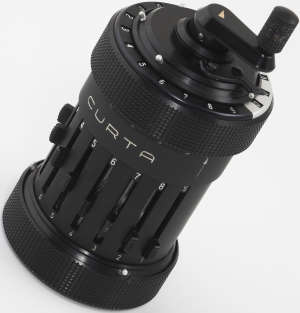

Curta — карманный арифмометр, выпущенный в 1948 году. Curta представляла собой небольшой цилиндр, помещающийся в руке. Могла производить операции сложения, вычитания, умножения, деления.
Машина выпускалась с 1948 по 1970 в Лихтенштейне фирмой Contina AG, произведено порядка 140 тыс. единиц. Широко использовалась как портативное вычислительное устройство. «Курта» работала долго и надёжно, но при поломке её было практически невозможно собрать без заводской оснастки; из 3 % арифмометров, вернувшихся на завод, немалая доля приходила в разобранном виде.
За необычную конструкцию Curta получила клички «перечница» и «математическая граната». И поныне много тысяч штук исправно работают и служат объектами для коллекционирования.
Ее создатель- австрийский инженер Курт Херцштарк. Курт Херцштарк родился 26 июля 1902 года в Вене. Его отец Самуэль был евреем и бизнесменом, мать Мария была католичка, перешедшая в лютеранство, в этой религии вырос и Курт.Был женат, имел сына и дочь. И умер 27 октября 1988 года в Нендельне, Лихтенштейн.